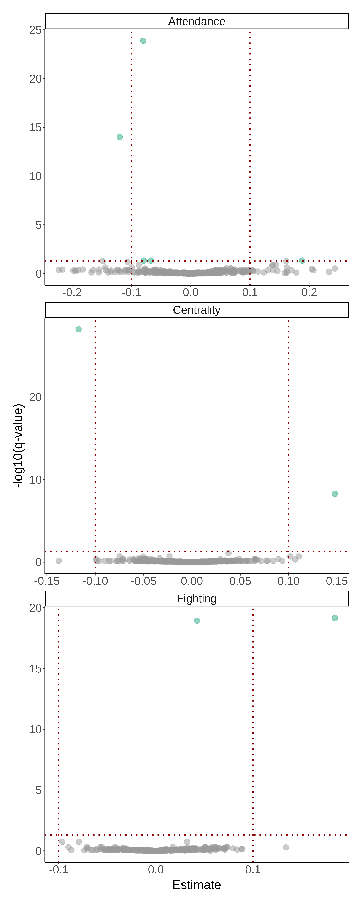
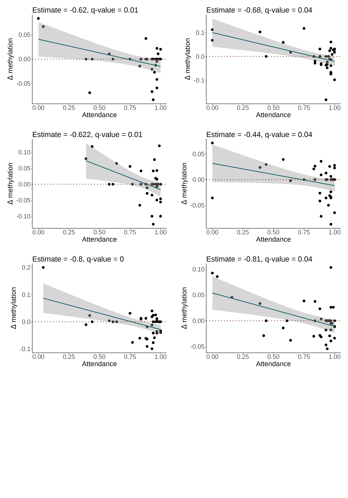
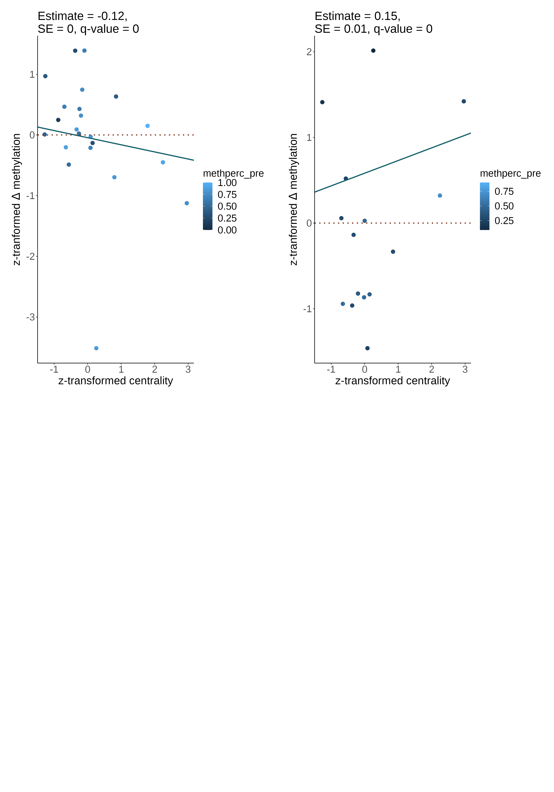
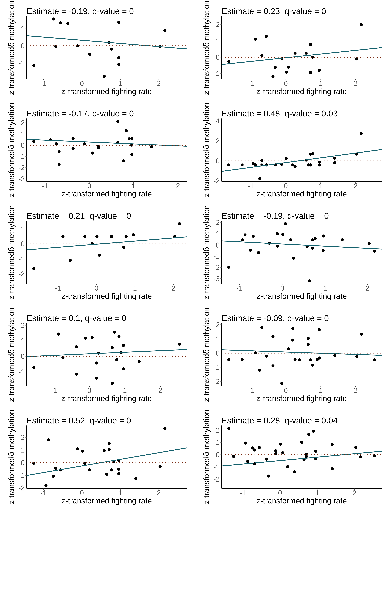
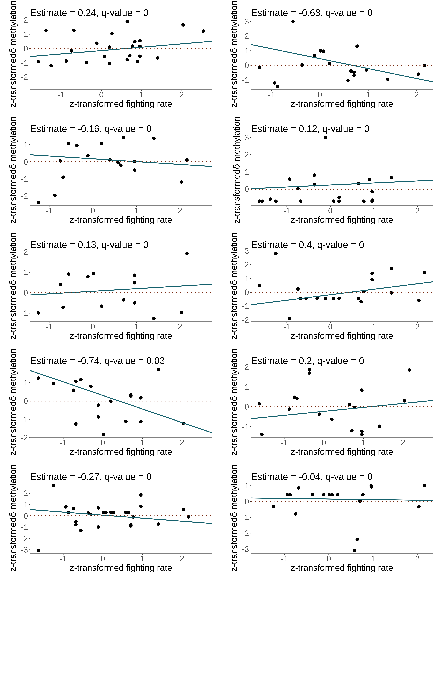
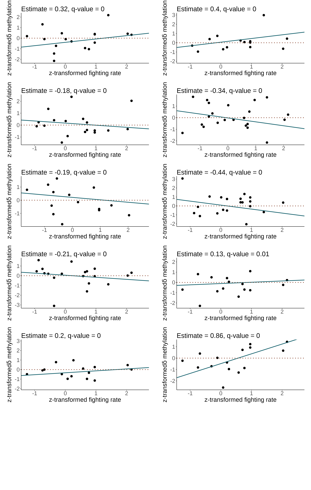
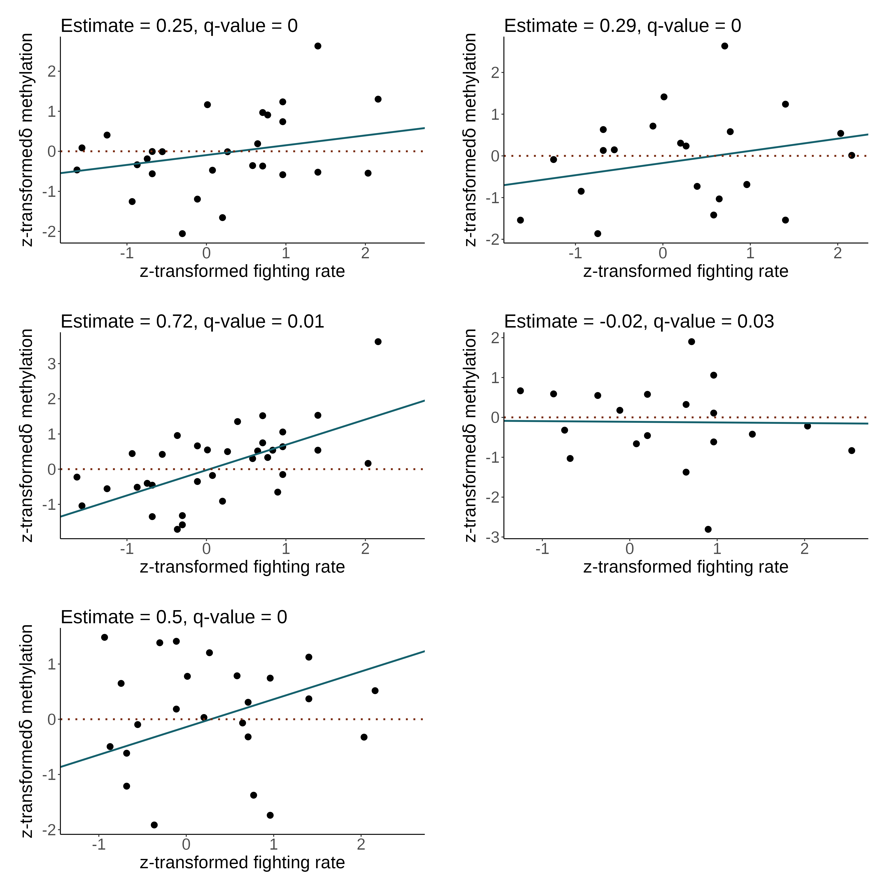

### load packages
pacman::p_load(tidyverse, data.table, tibble, performance, matrixStats,
parallel, performance, lmerTest, tidystats, insight)
### load data
load(file="results/modeloutput/subset_sites_sig_prepost.RData")
### load phenotypic data
load("data/phenotypes/fulldata_complete_epi_withdates.RData")
### Calculate delta methylation by matching up pre-post ####
delta_meth <- left_join(subset(changing_cpg, prepost == "pre"),
subset(changing_cpg, prepost == "post")[,c("chr_pos", "lib_id", "epi_nr", "lib", "methperc", "cov", "id", "year", "fulldate")],
by = c("chr_pos", "id", "year"), suffix = c("_pre", "_post"))
delta_meth <- delta_meth %>% dplyr::select(-c(numC, numT, n_sample, prepost))
delta_meth <- delta_meth %>% relocate(c(id, year, born:age), .before=lib_id_pre)
delta_meth <- delta_meth %>% mutate(delta_meth = methperc_post - methperc_pre, .after =born)
delta_meth <- delta_meth %>% mutate(diff_date = fulldate_post - fulldate_pre)
delta_meth$diff_date <- as.numeric(delta_meth$diff_date)5 Effort-associated CpG sites
Which changes in CpG site methylation are associated with reproductive effort?
We have now identified a subset of CpG sites that significantly change over the lekking season, either by increasing or decreasing in methylation level. We next test which CpG site changes are significantly associated with different measures of reproductive effort. Lekking is an energy-intensive, costly activity, as reflected by the losses in body mass in males that invest in reproduction (ref). Therefore, we expect that the cost associated with high reproductive investment goes at the expense of other costly processess, which can be observed by the up- or downregulation of associated genes.
Similar to before, we build a GLMM per CpG site to identify CpG sites whose DNA methylation change is associated with reproductive effort. We quantify reproductive effort using three behavioural traits: lek attendance, fighting rate and lek centrality. For each CpG site for each trait, we build a model that predicts delta methylation, while fitting the behaviour as a fixed effect.
First, we calculate delta methylation per CpG site significantly affected by time period (a changing CpG site).
5.1 Delta methylation
Now, we can use this calculation of delta methylation as a predictor of reproductive effort, and loop over CpG sites with this model. In addition to delta methylation, we also control for pre-methylation level (as this determines the potential for methylation change) and age as fixed effects.
5.2 Prepare the data
#combine with site and behaviour info
delta_meth <- left_join(delta_meth, unique(all_pheno_epi[,c("id", "year", "site", "Core")], by = c("id", "year")))
#z-transform the traits before the model that subsets IDs and years where there is
#data for that CpG site
effort <- all_pheno_epi %>% dplyr::select(c("id", "year", "attend", "fight", "dist", "MS")) %>% filter(!is.na(attend)) %>% unique()
effort <- subset(effort, id %in% delta_meth$id)
effort$attend_scl <- scale(effort$attend)
effort$fight_scl <- scale(effort$fight)
effort$dist_scl <- scale(effort$dist)
#combine effort data with methylation data
delta_meth <- left_join(delta_meth, effort[,c("id", "year", "attend", "fight", "dist", "attend_scl", "fight_scl", "dist_scl")], by = c("id", "year"))
delta_meth_ls <- delta_meth %>% group_split(chr_pos)5.3 Function to run the model
You can find the full function below, but importantly this is the LMM formula I run for each CpG site for each trait:
lmgerTest::lmer(scale(delta_meth) ~ scale(trait) + age + scale(methperc_pre) + (1|site/id))
Code
# function to run the model
function_model_delta <- function(df, parameter){tryCatch({
chr_pos <- as.character(df[1,1])
df <- as.data.frame(df)
df$methperc_pre_scl <- scale(df$methperc_pre)
formula <- formula(paste0("scale(delta_meth) ~ ", parameter, "_scl + age + scale(methperc_pre) + (1|site/id) "))
model <- lmerTest::lmer(formula, data=df)
summary <- summary(model)
overdisp.lmer_fun <- function(model) {
vpars <- function(m) {
nrow(m)*(nrow(m)+1)/2
}
model.df <- sum(sapply(VarCorr(model),vpars))+length(fixef(model))
rdf <- nrow(model.frame(model))-model.df
rp <- residuals(model,type="pearson")
Pearson.chisq <- sum(rp^2)
prat <- Pearson.chisq/rdf
pval <- pchisq(Pearson.chisq, df=rdf, lower.tail=FALSE)
data.frame(chisq=Pearson.chisq,ratio=prat,rdf=rdf,p=pval)
}
#fixed effect
parameter_estimate <- summary$coefficients[2,1]
parameter_se <- summary$coefficients[2,2]
parameter_df <- summary$coefficients[2,3]
parameter_tval <- summary$coefficients[2,4]
parameter_pval <- summary$coefficients[2,5]
#age effect
age_estimate <- summary$coefficients["age", "Estimate"]
age_se <- summary$coefficients["age", "Std. Error"]
age_df <- summary$coefficients["age", "df"]
age_tval <- summary$coefficients["age", "t value"]
age_pval <- summary$coefficients["age", "Pr(>|t|)"]
#premeth effect
pre_estimate <- summary$coefficients["scale(methperc_pre)", "Estimate"]
pre_se <- summary$coefficients["scale(methperc_pre)", "Std. Error"]
pre_df <- summary$coefficients["scale(methperc_pre)", "df"]
pre_tval <- summary$coefficients["scale(methperc_pre)", "t value"]
pre_pval <- summary$coefficients["scale(methperc_pre)", "Pr(>|t|)"]
rsqc <- performance::r2(model)$R2_conditional #fixed plus random parameterects relative to overall variance
rsqm <- performance::r2(model)$R2_marginal #fixed parameterects relative to overall variance
dispersion.chisq <- overdisp.lmer_fun(model)[1,1]
dispersion.ratio <- overdisp.lmer_fun(model)[1,2]
dispersion.rdf <- overdisp.lmer_fun(model)[1,3]
dispersion.pval <- overdisp.lmer_fun(model)[1,4]
isSingular <- isSingular(model)
icc_id_site <-icc(model, by_group = TRUE, tolerance = 0)[1,2]
icc_site <-icc(model, by_group = TRUE, tolerance = 0)[2,2]
return(data.frame(chr_pos=as.factor(chr_pos),
parameter = as.factor(parameter),
icc_id_site = as.numeric(icc_id_site),
icc_site = as.numeric(icc_site),
parameter_estimate = as.numeric(parameter_estimate),
parameter_se = as.numeric(parameter_se),
parameter_df = as.numeric(parameter_df),
parameter_tval = as.numeric(parameter_tval),
parameter_pval = as.numeric(parameter_pval),
age_estimate = as.numeric(age_estimate),
age_se = as.numeric(age_se),
age_df = as.numeric(age_df),
age_tval = as.numeric(age_tval),
age_pval = as.numeric(age_pval),
pre_estimate = as.numeric(pre_estimate),
pre_se = as.numeric(pre_se),
pre_df = as.numeric(pre_df),
pre_tval = as.numeric(pre_tval),
pre_pval = as.numeric(pre_pval),
rsqc = as.numeric(rsqc),
rsqm = as.numeric(rsqm),
dispersion.chisq = as.numeric(dispersion.chisq),
dispersion.ratio = as.numeric(dispersion.ratio),
dispersion.rdf = as.numeric(dispersion.rdf),
dispersion.pval = as.numeric(dispersion.pval),
isSingular = as.logical(isSingular)
))
}, error = function(e){cat("ERROR :", conditionMessage(e), "\n");print(chr_pos)})
}5.4 Run the model per trait
### run the model per trait
### centrality
# run model
delta_out_dist <- parallel::mclapply(delta_meth_ls, function_model_delta, parameter="dist",mc.cores=12)
delta_out_dist <- do.call(rbind.data.frame, delta_out_dist)
# convert to numeric
delta_out_dist$parameter_pval <- as.numeric(delta_out_dist$parameter_pval)
delta_out_dist$age_pval <- as.numeric(delta_out_dist$age_pval)
# exclude those with overdispersion
delta_out_dist <- subset(delta_out_dist, dispersion.ratio < 1.1 & dispersion.pval > 0.05)
# FDR correction
delta_out_dist$parameter_qval <- p.adjust(delta_out_dist$parameter_pval, method = "fdr", n = nrow(delta_out_dist))
delta_out_dist$age_qval <- p.adjust(delta_out_dist$age_pval, method = "fdr", n = nrow(delta_out_dist))Repeat this for all traits:
Code
### attendance
# run model
delta_out_attend <- parallel::mclapply(delta_meth_ls, function_model_delta, parameter="attend",mc.cores=12)
delta_out_attend <- do.call(rbind.data.frame, delta_out_attend)
# to numeric
delta_out_attend$parameter_pval <- as.numeric(delta_out_attend$parameter_pval)
delta_out_attend$age_pval <- as.numeric(delta_out_attend$age_pval)
# exclude overdispersion
delta_out_attend <- subset(delta_out_attend, isSingular == FALSE & dispersion.ratio < 1.1 & dispersion.pval > 0.05)
# FDR correction
delta_out_attend$parameter_qval <- p.adjust(delta_out_attend$parameter_pval, method = "fdr", n = nrow(delta_out_attend))
delta_out_attend$age_qval <- p.adjust(delta_out_attend$age_pval, method = "fdr", n = nrow(delta_out_attend))
### fighting
# run model
delta_out_fight <- parallel::mclapply(delta_meth_ls, function_model_delta, parameter="fight",mc.cores=12)
delta_out_fight <- do.call(rbind.data.frame, delta_out_fight)
# as numeric
delta_out_fight$parameter_pval <- as.numeric(delta_out_fight$parameter_pval)
delta_out_fight$age_pval <- as.numeric(delta_out_fight$age_pval)
# exclude overdispersion
delta_out_fight <- subset(delta_out_fight, dispersion.ratio < 1.1 & dispersion.pval > 0.05)
# FDR correction
delta_out_fight$parameter_qval <- p.adjust(delta_out_fight$parameter_pval, method = "fdr", n = nrow(delta_out_fight))
delta_out_fight$age_qval <- p.adjust(delta_out_fight$age_pval, method = "fdr", n = nrow(delta_out_fight))
delta_out_all <- rbind(delta_out_dist, delta_out_attend, delta_out_fight)
delta_out_all$chr_pos <- as.factor(delta_out_all$chr_pos)
delta_out_all$parameter <- as.factor(delta_out_all$parameter)
delta_out_all$isSingular <- as.logical(delta_out_all$isSingular)
delta_out_all[c(3:25, 27,28)] <- lapply(delta_out_all[c(3:25, 27:28)], as.numeric)Again, we have excluded CpG sites with convergence errors or significant overdispersion issues.
5.5 Results
There are 7 significant CpG sites for centrality, 3 for attendance, but and 35 for fighting rate.
Below you can find the volcano plots.

We can plot the raw data here per trait:
5.5.1 Attendance

5.5.2 Centrality

5.5.3 Fight
   